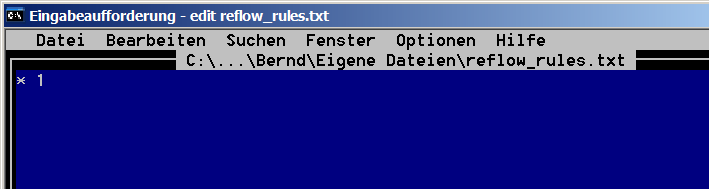
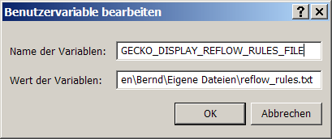

Debugging Frame Reflow HowTo
General Overview
The frame reflow can be logged with the debug capabilties implemented in nsFrame.cpp.
It provides the following information for each frame at the
start of its reflow
- reflow reason
- available width, available height
- computed width, computed height
- the previous and the next frame in flow
- and a count number.
When the frame's reflow is finished the following information is displayed :
- reflow metric (desired) width, height
- max. element width
- maximum width
- frame status
- overflow area
Getting the log
- Make sure that your build is a debug build (in short you need
ac_add_options --enable-debugin your.mozconfigfile). - Create a text file (for instance
reflow_rules.txt). - Enter this line in the text file
* 1
- This should look like:
 - point the
GECKO_DISPLAY_REFLOW_RULES_FILEenviroment variable to the path of thereflow_rules.txtfile.
 - Run
mozilla > logfile.txtand load your testcase. The logfile will contain all the promised information.
Log File analyis
The logfile for a simple table like
<!DOCTYPE html PUBLIC "-//W3C//DTD HTML 4.01 Transitional//EN">
<html>
<head>
<meta http-equiv="content-type" content="text/html; charset=ISO-8859-1">
</head>
<body>
<table width="100">
<tbody>
<tr>
<td>foo</td>
</tr>
</tbody>
</table>
</body>
</html>
will create the following log:
VP 00B97C30 r=0 a=9180,4470 c=9180,4470 cnt=856
scroll 00B97EE0 r=0 a=9180,4470 c=9180,4470 cnt=857
scroll 00B97EE0 r=0 a=9180,4470 c=9180,4470 cnt=858
canvas 00B97C6C r=0 a=9180,UC c=9180,4470 cnt=859
area 02D7AFE4 r=0 a=9180,UC c=9180,UC cnt=860
text 02D7B150 r=0 a=9180,UC c=UC,UC cnt=861
text 02D7B150 d=0,0
block 02D7B210 r=0 a=9180,UC c=8940,UC cnt=862
block 02D7B210 d=8940,0
area 02D7AFE4 d=9180,120
canvas 00B97C6C d=9180,4470
scroll 00B97EE0 d=9180,4470
scroll 00B97EE0 d=9180,4470
VP 00B97C30 d=9180,4470
VP 00B97C30 r=1 a=9180,4470 c=9180,4470 cnt=863
scroll 00B97EE0 r=1 a=9180,4470 c=9180,4470 cnt=864
scroll 00B97EE0 r=1 a=9180,4470 c=9180,4470 cnt=865
canvas 00B97C6C r=1 a=9180,UC c=9180,4470 cnt=866
area 02D7AFE4 r=1 a=9180,UC c=9180,UC cnt=867
block 02D7B210 r=1 a=9180,UC c=8940,UC cnt=868
text 02D7B3F8 r=0 a=8940,UC c=UC,UC cnt=869
text 02D7B3F8 d=0,0
tblO 02D7B5F0 r=0 a=8940,UC c=0,0 cnt=870
tbl 02D7B7EC r=0 a=8940,UC c=1500,UC cnt=871
rowG 00B984A4 r=0 a=UC,UC c=UC,UC cnt=872
row 02D7BAF8 r=0 a=UC,UC c=UC,UC cnt=873
cell 02D7BC98 r=0 a=UC,UC c=UC,UC cnt=874
block 02D7BCF8 r=0 a=UC,UC c=UC,UC cnt=875
text 02D7BE84 r=0 a=UC,UC c=UC,UC cnt=876
text 02D7BE84 d=300,285 me=300
block 02D7BCF8 d=300,300 me=300
cell 02D7BC98 d=330,330 me=330
row 02D7BAF8 d=UC,330
rowG 00B984A4 d=UC,330
colG 02D7BFB0 r=0 a=UC,UC c=UC,UC cnt=877
col 02D7C0D8 r=0 a=0,0 c=1500,UC cnt=878
col 02D7C0D8 d=0,0
colG 02D7BFB0 d=0,0
rowG 00B984A4 r=2 a=1500,UC c=1500,UC cnt=879
row 02D7BAF8 r=2 a=1500,UC c=1500,UC cnt=880
cell 02D7BC98 r=2 a=1440,UC c=1410,UC cnt=881
block 02D7BCF8 r=2 a=1410,UC c=1410,UC cnt=882
block 02D7BCF8 d=1410,300
cell 02D7BC98 d=1440,330
row 02D7BAF8 d=1500,330
rowG 00B984A4 d=1500,330
colG 02D7BFB0 r=2 a=1500,UC c=1500,UC cnt=883
col 02D7C0D8 r=0 a=0,0 c=1500,UC cnt=884
col 02D7C0D8 d=0,0
colG 02D7BFB0 d=0,0
tbl 02D7B7EC d=1500,390
tblO 02D7B5F0 d=1500,390
text 02D7C130 r=0 a=8940,UC c=UC,UC cnt=885
text 02D7C130 d=0,0
block 02D7B210 d=8940,390
area 02D7AFE4 d=9180,630
canvas 00B97C6C d=9180,4470
scroll 00B97EE0 d=9180,4470
scroll 00B97EE0 d=9180,4470
VP 00B97C30 d=9180,4470
|
The first line shows the reflow of the viewport (VP). This viewport has the address 00B97C30. It is the initial reflow: r=0. Other reflow reasons are:
| 1 | incremental reflow |
| 2 | resize reflow |
| 3 | style change reflow |
| 4 | dirty reflow. |
The available width is 9180 twips. The available height is 4470 twips (a=9180,4470). The computed width is 9180 twips. The computed height is 4470 twips (c=9180,4470). The line count is 856 (cnt=856).
Below this is a line that reads:
tblO 02D7B5F0 r=0 a=8940,UC c=0,0 cnt=870
Here the UC shows that on initial reflow the available height for the outer table frame is unconstrained.
The table cell requires its children to compute the MES. It is reported back from the block as:
block 02D7BCF8 d=300,300 me=300
The block max. element size is 300 twips.
The second table reflow is started at
rowG 00B984A4 r=2 a=1500,UC c=1500,UC cnt=879
where the previous information is used. The block has been required to compute the max. element size only once and it reports now:
block 02D7BCF8 d=1410,300
The block shows the same address as the previous one.
Frames with children that overflow the parent have the NS_FRAME_OUTSIDE_CHILDREN flag set. For these frames
the overflowarea is displayed as block 025ED8F0 d=8940,1020 o=(0,0) 9180 x 1020. The overflow area is specified as (x,y) origin and width x height.
The reflow finishes at the same level where it started.
Advanced reflow debugging
The previously described technique dumps the data for every frame. Sometimes the log is clearer if only the main frames are shown.
The entries in the reflow log can be controlled on a frame level. For instance adding text 0 to the rules in reflow_rules.txt would hide the text entries from the reflow. The display of the following frames can be turned on by adding a line with the frame name and 1 or turned off by adding a line with the frame name and 0:
| short name | layout tag |
|---|---|
| area | area |
| block | block |
| br | br |
| bullet | bullet |
| button | gfxButtonControl |
| hr | hr |
| frameI | htmlFrameInner |
| frameO | htmlFrameOuter |
| img | image |
| inline | inline |
| letter | letter |
| line | line |
| select | select |
| obj | object |
| page | page |
| place | placeholder |
| posInline | positionedInline |
| canvas | canvas |
| root | root |
| scroll | scroll |
| caption | tableCaption |
| cell | tableCell |
| bcCell | bcTableCell |
| col | tableCol |
| colG | tableColGroup |
| tbl | table |
| tblO | tableOuter |
| rowG | tableRowGroup |
| row | tableRow |
| textCtl | textInput |
| text | text |
| VP | viewport |
Once the problem is reduced to a single frame level, placing a breakpoint at DisplayReflowEnterPrint in nsFrame.cpp is a very efficient way to step through
the reflow tree.
Other reflow debug options
GECKO_DISPLAY_REFLOW_FLAG_PIXEL_ERRORS
Setting this option via set GECKO_DISPLAY_REFLOW_FLAG_PIXEL_ERRORS = 1 enables a verification for each coordinate value that the coordinates are aligned at pixel boundaries.
row 0268A594 r=0 a=UC,UC c=UC,20 cnt=870
VALUE 20 is not a whole pixel
cell 0268A6C0 r=0 a=UC,UC c=UC,15 cnt=871
block 0268A764 r=0 a=UC,UC c=UC,UC cnt=872
block 0268A764 d=0,0 me=0
cell 0268A6C0 d=0,0 me=0
row 0268A594 d=UC,20
VALUE 20 is not a whole pixel
rowG 0268A02C d=UC,695
VALUE 695 is not a whole pixel
|
While unaligned values at the entrance of a frame reflow can be ignored, when they appear at the exit of a routine this can cause display errors like stray lines. OS2 is very vulnerable to pixel alignement errors as text is drawn on pixel boundaries.
GECKO_DISPLAY_REFLOW_INDENT_UNDISPLAYED_FRAMES
Setting this option via set GECKO_DISPLAY_REFLOW_INDENT_UNDISPLAYED_FRAMES = 1 will cause an advance of the indent even for frames which are blocked via the reflow rules file.